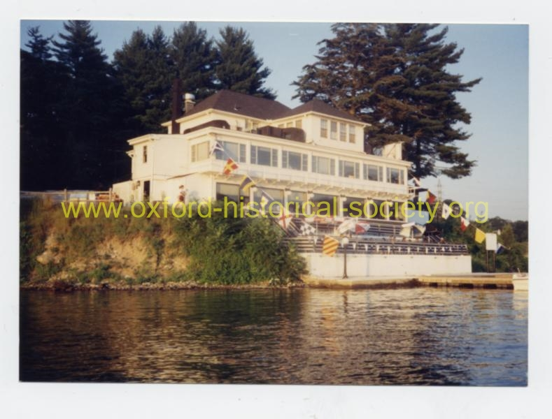

 068_Land-n-Lake-Inn-from-Lake-Zoar_2012-PF.jpg
Land 'N Lake Inn on Lake Zoar as seen from the river. The building was demol- ished as part of the state's plan for replacing the bridge that now runs over the Stevenson Dam. Unfortunately, no work has ever been done on the proposed project.
Previous
Thumbnails
Next